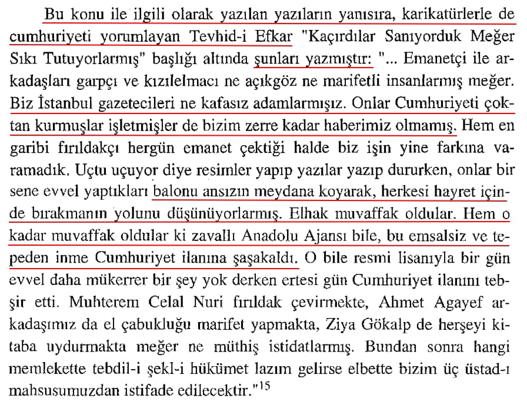
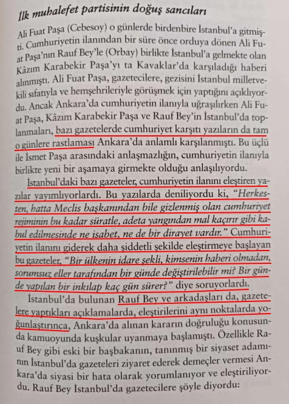
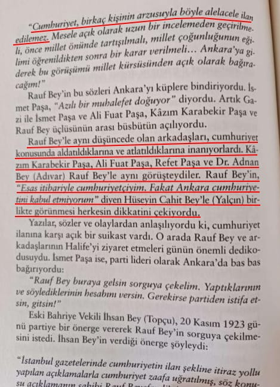
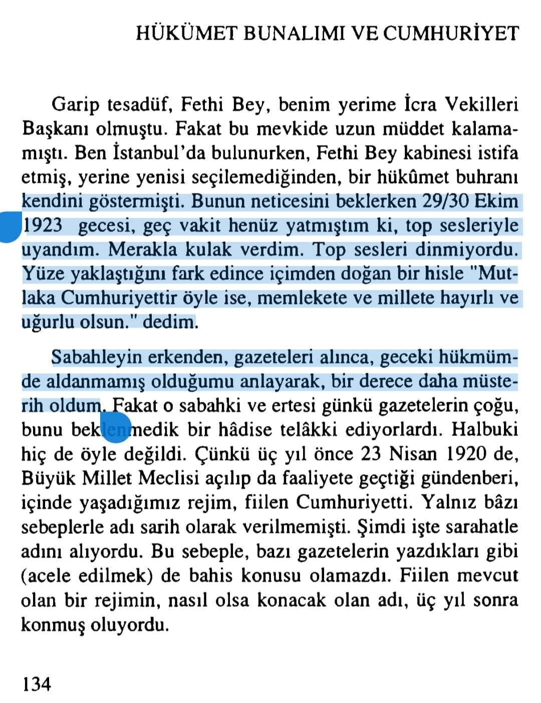
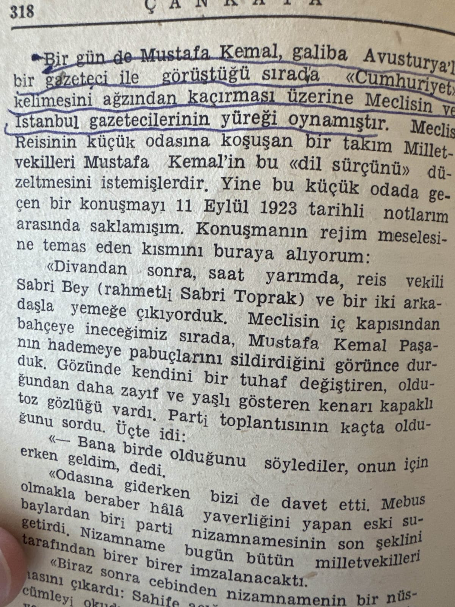
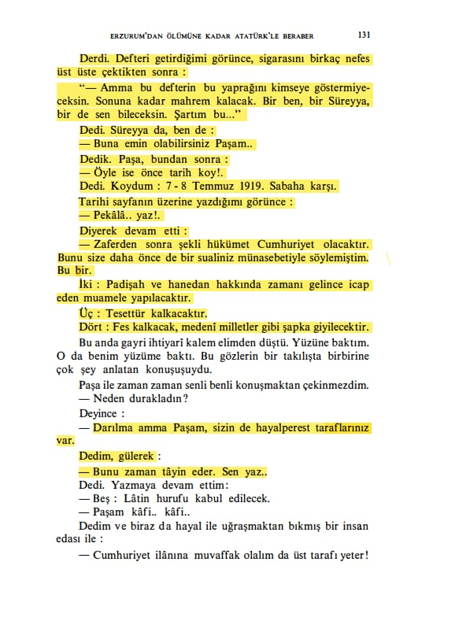
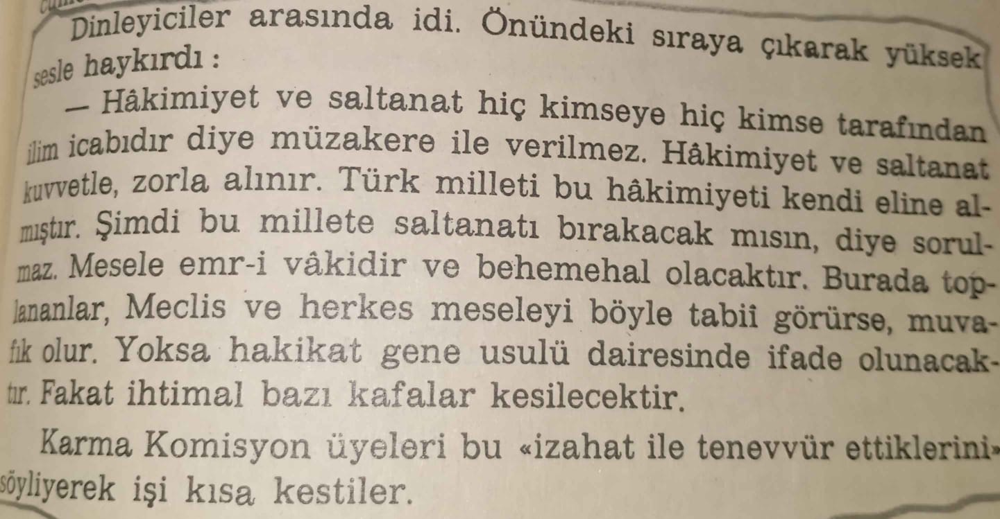

📌 *Tevhid-i Efkâr gazetesi, Cumhuriyet'in herkesten habersiz ve ansızın ilan edildiğini yazar ve eleştirir*:📚 Tevhid-i Efkar, 1 Kasım 1923, ''Kaçırdılar Sanıyorduk Meğer Sıkı Tutuyorlarmış"

- 📌 *Rauf, Refet, Ali Fuat ve Karabekir Paşa'lara haber verilmeden ilan edilen Cumhuriyet, diğer gazeteleride etkileyerek muhalefeti arttırmıştı*:📚 İpek Çalışlar, Atatürk: Mücadelesi ve Özel Hayatı, s. 400

1.belge- 📌 *Atatürk'ün sırdaşı Kılıç Ali, o dönemki muhalefet ve basının, Cumhuriyet'in habersiz ilanına yoğun ve sert tepkiler gösterdiğini aktarır*:📚 Kılıç Ali'nin Anıları, s. 219-220

2.belgesi

📌 *Rauf Bey'in Cumhuriyetin ilanından habersiz olup top sesleriyle öğrenmesi.*📚 Rauf Orbay, Siyasi Hatıralarım, Cilt 2, s.134

📌Cumhuriyetin İlan Olunacağından Meclis Ve Gazeteciler Dahi Habersizdi. 📚Falih Rıfkı Atay, Çankaya, C.2, s.318

📌 *Mustafa Kemal Erzurumda Cumhuriyet Fikrini Kafasına koymuştu.* 📚 Mazhar Müfit Kansu, Erzurum'dan Ölümüne Kadar Atatürk'le Beraber, C.1, s.131
